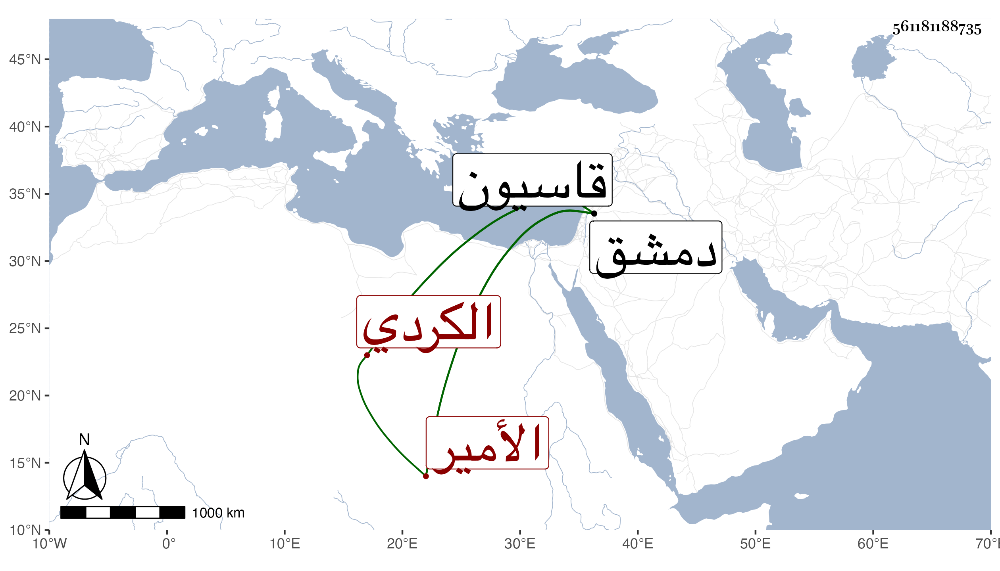

0902Sakhawi.DawLamic.ITO20230111-ara1.EIS1600.561181188735
Biography ID: 561181188735
481
أبو الهيجا بن عيسى بن خسترين الأمير مجير الدين الأزكشي الكردي كان من أعيان الأمراء وشجعانهم له في مصاف التتار بعين جالوت اليد البيضاء ولما قدم الملك المظفر دمشق بعد كثرة التتار رتب الأمير علم الدين الحلبي نائبا عنه وجعل هذا مشاركا له في الرأي والتدبير مات بدمشق ودفن بقاسيون ذكره ابن خطيب الناصرية .
